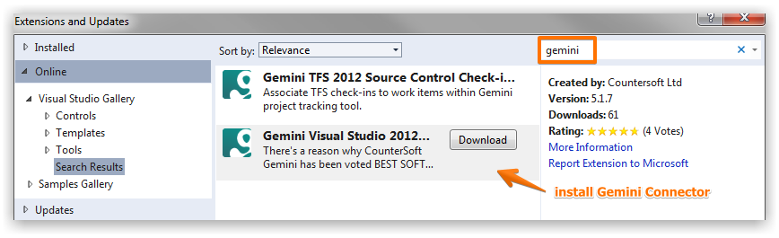

The Gemini connector for Microsoft Visual Studio provides work item visibility, screen capture and stop-watch style time recording.
The connector is available through the Visual Studio Gallery and is best installed from within Visual Studio.

Direct download links:
Once installed, the Gemini connector is available from Tools → Gemini.
Gemini connector displays items in a grid where you click to select an item. Once selected you can attach a screenshot, add a comment or use stop-watch time recording.
Follow the Gemini Desktop guide.